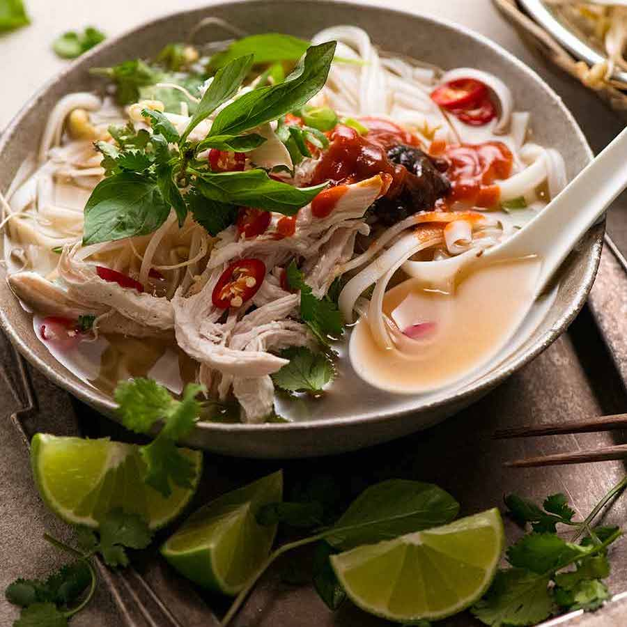

Chicken Pho Recipe

Description
Chicken Pho (Pho Ga) – the little sister of famous Beef Pho, equally delicious but much easier to make! I call it the Vietnamese version of homemade chicken noodle soup made from scratch. Except – dare I say it – so much more exciting!
Ingredients
- Aromatics
- Broth
- Noodles
- Chicken
Steps
- 1. Char onion & ginger - Heat oil in a 6 litre / 6 quart pot (Note 5) over high heat. Place ginger and onion facedown, leave undisturbed for 2 minutes until they blacken. Turn and leave for another 2 minutes.
- 2. Put everything in pot - Add water and remaining Broth ingredients EXCEPT salt. Bring it a simmer, then lower heat so it's simmering VERY gently with the lid on, but open a crack (Note 6).
- 3. Simmer gently 1.5 hours. Scoop off scum (dirty foam) that rises to surface once or twice during the simmering.
- 4. Strain & measure - Remove chicken, then strain broth into a clean pot - you should have 1.5 litres / 1.5 quarts. If you have more, simmer to reduce. If less, top it up with water.
- 5. Salt broth - Add salt, bring broth to a gentle simmer. Broth should be slightly on the salty side - it dilutes when you add the noodles.
- 6. Keep broth warm until ready to serve.
- 7. Shred chicken meat, discard bones and skin. (Note 6 Leftover Chicken ideas).